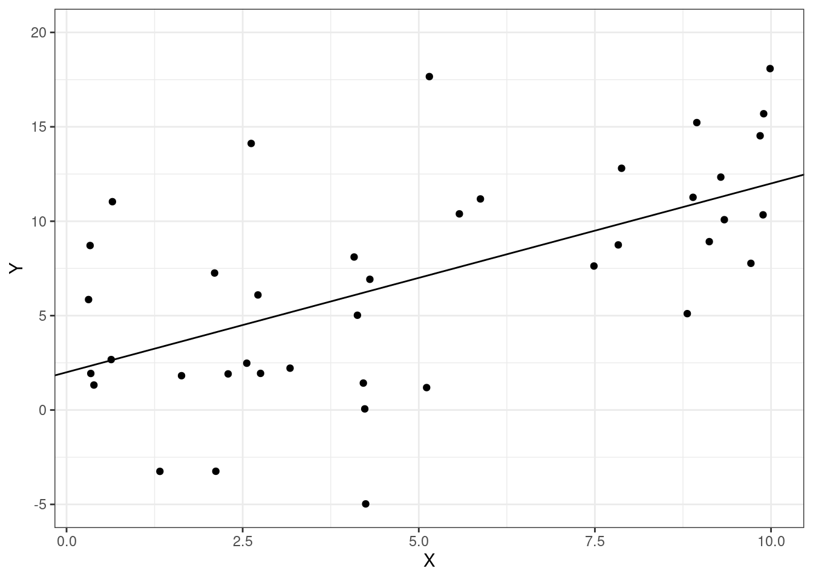
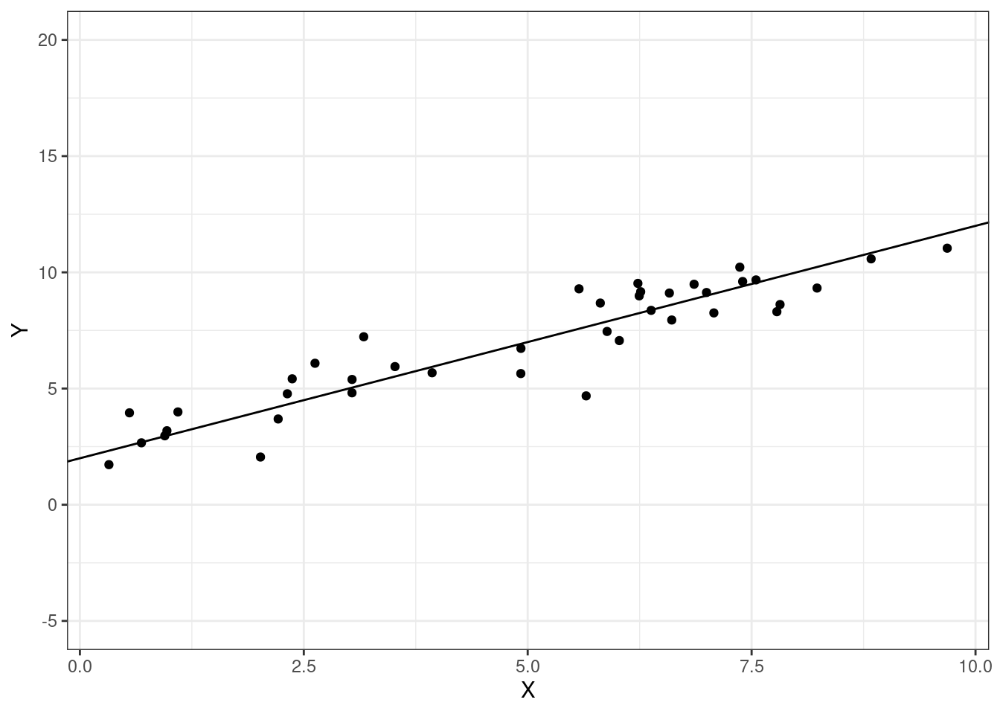
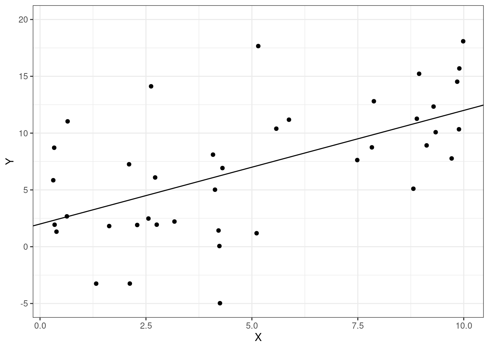
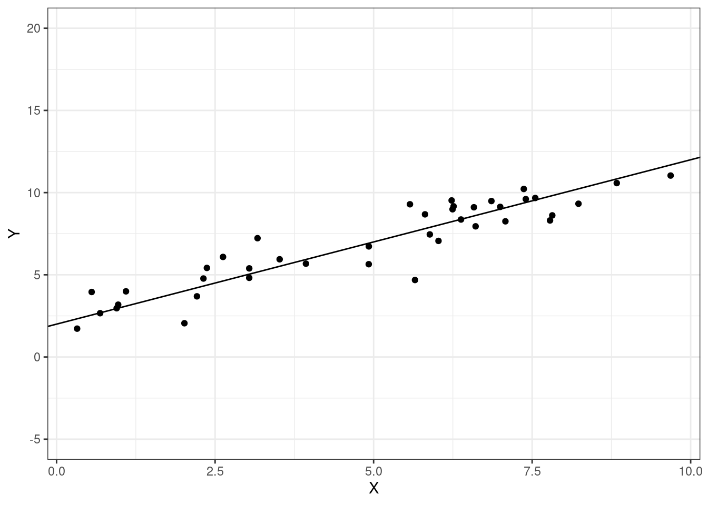

In this part of the class, we’ll learn how to use regressions and “machine learning” in order to predict outcomes of interest using available, related data. One key issue when it comes to making predictions is that we typically have lots of possible models that we could use to make the predictions. Choosing which of these models works best, or model selection, is therefore often an important step when it comes to making good predictions.
Another important issue with prediction is a focus on making out-of-sample predictions. We can usually make better within-sample predictions just by making the model more complicated, but this often leads to over-fitting — predictions that are “too specific” to our particular data.
We’ll start this chapter by learning about measures of how well a regression fits the data. Consider the following figure


These are exactly the same two regression lines. But we probably have the sense that the regression line in the second figure “fits better” than in the first figure, and, furthermore, that this is likely to result in better predictions of whatever the second outcome is relative to the first one. We’ll formalize this below.
SW 6.4
Let’s start by defining some quantities. These will be useful for quantifying how well the model fits the data.
Total Sum of Squares (TSS) — measures total variation in the data
\[ TSS = \sum_{i=1}^n (Y_i - \bar{Y})^2 \]
Explained Sum of Squares (ESS) — measures variation explained by the model
\[ ESS = \sum_{i=1}^n (\hat{Y}_i - \bar{Y})^2 \]
Sum of Squared Residuals (SSR) — measures “leftover” variation in the data that is not explained by the model
\[ SSR = \sum_{i=1}^n \hat{U}_i^2 = \sum_{i=1}^n (Y_i - \hat{Y}_i)^2 \]
Properties
A first useful property is
\[ TSS = ESS + SSR \]
We will not prove this property though it is a useful exercise and not actually that challenging.
Another useful property is that \(TSS\), \(ESS\), and \(SSR\) are all positive — this holds because they all involve sums of squared quantities.
SW 6.4
\(R^2\) is probably the most common measure of regression fit. It is defined as
\[ R^2 := \frac{ESS}{TSS} \]
so that \(R^2\) is the fraction of the variation in \(Y\) explained by the model. Notice that \(R^2\) is always between 0 and 1 which holds by the two properties of \(TSS\), \(ESS\), and \(SSR\) listed in the previous section.
SW 7.5 (note: we cover substantially more details than the textbook about model selection)
Often, when we want to use data to make predictions, there are multiple possible models that we could estimate to make the predictions. For example, suppose that we are interested in predicting house prices and we have access to data about the number of square feet, whether or not the house has a basement, the number of bedrooms, and the number of bathrooms. All of these are probably good variables to include in a model to predict house prices (though it is less clear if we should include quadratic terms, interaction terms, or other higher order terms). But suppose we also observe some variables that are probably irrelevant (e.g., whether the street number is odd or even) or not clear whether they matter or not (e.g., number of ceiling fans or paint color). It is not clear which variables we should include in the model. An alternative way to think about this is that there would be a large number of possible models that we could estimate here, and it is not immediately obvious which one will predict the best.
From the previous example, it seems that in many realistic applications, there are a large number of possible models that we could estimate to make predictions. How should we choose which one to use?
One idea is to just throw all the data that we have into the model. In many applications, this may not be a good idea. I’ll provide a specific example below.
Before doing that, I want to distinguish between two concepts. Typically, what we mean we say that a model is good at making predictions is that it is a good at making out-of-sample predictions. In other words, some new observation shows up (e.g., a new house comes on the market) with certain characteristics — we would like to be using a model that makes good predictions for this house. This is a distinct concept from in-sample fit of the model — how well a model predicts for the data that it is estimated on. In the context of prediction, one very common problem is over-fitting. Over-fitting is the problem of getting predictions that are too specific to the particular data that you have, but then that don’t work well for new data.
Suppose that you are interested in predicting height of students at UGA. You consider estimating three models
\[ \begin{aligned} Height &= \beta_0 + \beta_1 Male + U \\ Height &= \beta_0 + \beta_1 Male + \beta_2 Year + U \\ Height &= \beta_0 + \beta_1 Male + \beta_2 Year + \beta_3 Birthday + U \end{aligned} \] where \(Year\) is what year in school a student is in (e.g., Freshman, Sophomore, etc.), and \(Birthday\) is what day of the year a student was born on.
You also notice that \(R^2\) is greatest for the third model, in the middle for the second model, and smallest for the first model.
The third model likely suffers from over-fitting. In particular, knowing a student’s birthday may really help you predict height in-sample. For example, suppose that the center on the basketball team is in your sample, and his birthday is July 15. Knowing this, you will likely be able to make a much better prediction for this observation in your data using Model 3 which \(\implies\) that the \(R^2\) will be much higher for this model. But this won’t help you predict well out-of-sample. If a new person shows up whose birthday is July 15, they are unlikely to also be a center on the basketball team which further implies that your prediction of their height is likely to be very poor.
The previous example is about over-fitting with the idea that better in-sample predictions can actually lead to worse out-of-sample predictions.
SW 6.4
\(R^2\) is a measure of in-sample fit. In fact, you can always increase \(R^2\) by adding new variables into a model. To see this, notice that
\[ \begin{aligned} R^2 &= \frac{ESS}{TSS} \\ &= 1 - \frac{SSR}{TSS} \end{aligned} \] When you add a new variable to a model, \(SSR\) cannot increase (see explanation below). Since \(SSR\) cannot increase, it means that \(R^2\) can only increase (or at a minimum remain unchanged) when a new regressor is added to the model.
This means that, if you were to choose a model by \(R^2\), it would always choose the “kitchen-sink” (include everything) model. But, as we discussed above, this is likely to lead to severe over-fitting problems. This suggests using alternative approaches to choose a model for the purposed of prediction.
SW 6.4
Given the above discussion, we would like to have a way to choose a model that doesn’t necessarily always select the most complicated model.
A main way to do this is to add a penalty to adding more regressors to the model. One version of this is called adjusted \(R^2\), which we will write as \(\bar{R}^2\). It is defined as
\[ \bar{R}^2 := 1 - \underbrace{\frac{(n-1)}{(n-k)}}_{\textrm{penalty}} \frac{SSR}{TSS} \] where \(k\) is the number of regressors included in the model (note: we also count the intercept as a regressor here; so for example, in the regression \(\E[Y|X_1,X_2] = \beta_0 + \beta_1 X_1 + \beta_2 X_2\), \(k=3\)). Notice, if the penalty term were equal to 1, then this would just be \(R^2\).
Now, let’s think about what happens to \(\bar{R}^2\) when you add a new regressor to the model.
\(SSR \downarrow \implies \bar{R}^2 \uparrow\)
\((n-k-1) \downarrow \implies \bar{R}^2 \downarrow\)
Thus, there is a “benefit” and a “cost” to adding a new regressor. If you are choosing among several models based on \(\bar{R}^2\), you would choose the model that has the highest \(\bar{R}^2\). And the logic is this: if the regressor greatly decreases \(SSR\), then the “benefit” of adding that regressor will tend to outweigh the “cost”. On the other hand, if the regressor has little effect on \(SSR\), then the “benefit” of adding that regressor will tend to be smaller than the “cost”.
There are other approaches to model selection that follow a similar idea. Two of the most common ones are the Akaike Information Criteria (AIC) and the Bayesian Information Criteria (BIC). These tend to be somewhat better choices for model selection than \(\bar{R}^2\).
These are given by
For both AIC and BIC, you would choose the model that minimizes these.
Another common way to choose a model is called cross-validation. The idea is to mimic the out-of-sample prediction problem using the data that we have access to.
In particular, one simple version of this is to split your data into two parts: these are usually called the training sample and the testing sample. Then, estimate all models under consideration using the training sample. Given the estimated values of the parameters, then predict the outcomes for observations in the testing sample; and compare these predictions to the actual outcomes in the testing sample. Choose the model that minimizes the squared prediction error in the testing sample.
Cross-validation is a somewhat more complicated version of the same idea. Basically, we will repeatedly split the data into a training sample and a testing sample, and get predictions for all observations in our data (instead of just for a held-out testing sample).
Here is an algorithm for cross-validation:
Algorithm:
Split the data into J folds
For the jth fold, do the following:
Estimate the model using all observations not in the Jth fold (\(\implies\) we obtain estimates \(\hat{\beta}_0^j, \hat{\beta}_1^j, \ldots, \hat{\beta}_k^j\))
Predict outcomes for observations in the Jth fold using the estimated model from part (1): \[\begin{align*} \tilde{Y}_{ij} = \hat{\beta}_0^j + \hat{\beta}_1^j X_{1ij} + \cdots + \hat{\beta_k^j} X_{kij} \end{align*}\]
Compute the prediction error: \[\begin{align*} \tilde{U}_{ij} = Y_{ij} - \tilde{Y}_{ij} \end{align*}\] (this is the difference between actual outcomes for individuals in the Jth fold and their predicted outcome based on the model from part (1))
Do steps 1-3 for all \(J\) folds. This gives a prediction error \(\tilde{U}_i\) for each observation in the data
compute the cross validation criteria (mean squared prediction error): \[\begin{align*} CV = \frac{1}{n} \sum_{i=1}^n \tilde{U}_{i}^2 \end{align*}\]
choose the model that produces the smallest value of \(CV\).
Cross-validation is a good way to choose a model, but it can sometimes be computationally challenging (because you are estimating lots of models) — particularly, if the models under consideration are very complicated or there a large number of observations.
Above, we split the data into \(J\) folds. This introduces some randomness into our model selection criteria. In particular, if you split the data in a different way from how I split the data, then we could choose different models. This is a somewhat undesirable feature of a model selection criteria. One way to get around this is to set \(J=n\). This makes it so that every observation has its own fold. This is called leave-one-out cross-validation. In this case, there is no randomness in the model selection criteria. The drawback is that it is more computational — in this case, you need to estimate the model \(n\) times rather than \(J\) times.
In the case where you are considering a large number of possible models, it is pretty common that a number of models will, by any of the above model selection criteria, be expected to perform very similarly when making predictions.
In this case, one strategy that usually does well in terms of making out-of-sample predictions is model averaging.
Suppose you have \(M\) different models, and that each model can produce a predicted value for \(Y_i\) — let’s call the predicted value from model \(m\), \(\hat{Y}_i^m\). Model averaging would involve obtaining a new predicted value, call it \(\hat{Y}_i\) by computing \[\begin{align*} \hat{Y}_i = \frac{1}{M} \sum_{m=1}^M \hat{Y}_i^m \end{align*}\]
\(R^2\) and \(\bar{R}^2\) are both reported as output from R’s lm command.
It is straightforward (and a useful exercise) to compute \(TSS, ESS,\) and \(SSR\) directly. It is also straightforward to calculate \(AIC\) and \(BIC\) — there are probably packages that will do this for you, but they are so easy that I suggest just calculating on your own.
The same applies to cross validation. I suspect that there are packages available that will do this for you, but I think these are useful coding exercises and not all that difficult. Also, if you do this yourself, it removes any kinds of “black box” issues from downloading R code where it may not be clear exactly what it is doing.
SW 14.1, 14.2, 14.6
Some extra resources on estimating Lasso and Ridge regressions in R:
“Big” Data typically means one of two things:
\(n\) — the number of observations is extremely large
\(k\) — the number of regressors is very large
\(n\) being large is more of a computer science problem. That said, there are economists who think about these issues, but I think it is still the case that it is relatively uncommon for an economist to have so much data that they have trouble computing their estimators.
We’ll focus on the second issue — where \(k\) is large. A main reason that this may occur in applications is that we may be unsure of the functional form for \(\E[Y|X_1,X_2,X_3]\). Should it include higher order terms like \(X_1^2\) or \(X_1^3\)? Should it include interactions like \(X_1 X_2\). Once you start proceeding this way, even if you only have 5-10 actual covariates, \(k\) can become quite large.
As in the case of the mean, perhaps we can improve predictions by introducing some bias while simultaneously decreasing the variance of our predictions.
Let’s suppose that we have some function that can take in regressors and makes predictions of the outcome; we’ll call this function \(\hat{f}\) (where the “hat” indicates that we’ll typically estimate this function). An example would just be a regression where, for example, \(\hat{f}(X) = \hat{\beta}_0 + \hat{\beta}_1 X_1 + \hat{\beta}_2 X_2 + \hat{\beta}_3 X_3\). One way to evaluate how well \(\hat{f}\) makes predictions is by considering its mean squared prediction error:
\[ MSPE := \E\left[ (Y - \hat{f}(X))^2 \right] \] \(MSPE\) quantifies the mean “distance” between our predictions and actual outcomes.
Recall that, if we could just pick any function to minimize \(MSPE\), we would set \(\hat{f}(X) = \E[Y|X]\), but generally we do not just know what \(\E[Y|X]\) is. We can “decompose” MSPE into several underlying conditions
\[ \begin{aligned} MSPE &= \E\left[ \left( (Y - \E[Y|X]) - (\hat{f}(X) - \E[\hat{f}(X)|X]) - (\E[\hat{f}(X)|X] - \E[Y|X]) \right)^2 \right] \\ &= \E\left[ (Y-\E[Y|X])^2 \right] + \E\left[ (\hat{f}(X) - \E[\hat{f}(X)|X])^2\right] + \E\left[ (\E[\hat{f}(X)|X] - \E[Y|X])^2 \right] \\ &= \Var(U) + \E[\Var(\hat{f}(X)|X)] + \E\left[\textrm{Bias}(\hat{f}(X))^2\right] \end{aligned} \] where, to understand this decomposition, the first equality just adds and subtracts \(\E[Y|X]\) and \(\E[\hat{f}(X)|X]\). The second equality squares the long expression from the first equality and cancels some terms. The third equality holds where \(U := Y-\E[Y|X]\), by the definition of (conditional) variance, and we call the last bias because it is the difference between the mean of our prediction function \(\hat{f}\) and \(\E[Y|X]\).
You can think of the term \(\Var(U)\) as being irreducible prediction error — even if we knew \(\E[Y|X]\), we wouldn’t get every prediction exactly right. But the other two terms come from having to estimate \(\hat{f}\). The term \(\E[\Var(\hat{f}(X)X)]\) is the average variance of our predictions across different values of \(X\). The term \(\E\left[\textrm{Bias}(\hat{f}(X))^2\right]\) is the squared bias of our predictions averaged across different values of \(X\). Many machine learning estimators have the property of being biased (so that the last term is not equal to 0), but having reduced variance relative to OLS estimators.
To do this, we’ll estimate the parameters of the model in a similar way to what we have done before except that we’ll add a penalty term that gets larger as parameter estimates move further away from 0. In particular, we consider estimates of the form
\[ (\hat{\beta}_1, \hat{\beta}_2, \ldots, \hat{\beta}_k) = \underset{b_1,\ldots,b_k}{\textrm{argmin}} \sum_{i=1}^n (Y_i - b_1 X_{1i} - \cdots - b_k X_{ki})^2 + \textrm{penalty} \]
Lasso and ridge regression, which are the two approaches to machine learning that we will talk about below, amount to different choices of the penalty term.
Side-Comment: Generally, you should “standardize” the regressors before implementing Lasso or Ridge regression. The glmnet package does this for you by default.
SW 14.3
For Lasso, the penalty term is given by
\[ \lambda \sum_{j=1}^k |b_j| \] The absolute value on each of the \(b_j\) terms means that the penalty function gets larger for larger values of any \(b_j\). Since we are trying to minimize the objective function, this means that there is a “cost” to choosing a larger value of \(b_j\) relative to OLS. Thus, Lasso estimates tend to be “shrunk” towards 0.
\(\lambda\) is called a tuning parameter — larger values of \(\lambda\) imply that the penalty term is more important. Notice that, if you send \(\lambda \rightarrow \infty\), then the penalty term will be so large that you would set all the parameters to be equal to 0. On the other hand, if you set \(\lambda=0\), then you will get the OLS estimates (because there will be no penalty in this case). In general, it is hard to know what is the “right” value for \(\lambda\), and it is typically chosen using cross validation (this will be done automatically for you using the glmnet package).
SW 14.4
For Ridge, the penalty term is given by
\[ \lambda \sum_{j=1}^k b_j^2 \] Much of the discussion from Lasso applies here. The only difference is that the form of the penalty is different here: \(b_j^2\) instead of \(|b_j|\). Relative to the Lasso penalty, the Ridge penalty “dislikes more” very large values of \(b_j\).
Comparing Lasso and Ridge
Both shrink the estimated parameters towards 0. This tends to introduce bias into our predictions but comes with the benefit of reducing the variance of the predictions.
Interestingly, both Lasso and Ridge can be implemented when \(k > n\) (i.e., if you have more regressors than observations). This is in contrast to to OLS, where the parameters cannot be estimated in this case.
Both are generally not very computationally intensive. For ridge regression, we can in fact derive an explicit expression for the estimated \(\beta\)’s. We cannot do this with Lasso; a full discussion of how Lasso actually estimates the parameters is beyond the scope of our course, but, suffice it to say, that you can generally compute Lasso estimates quickly.
Lasso also performs “model selection” — that is, if you use the Lasso, many of the estimated parameters will be set equal to 0. This can sometimes be an advantage. Ridge (like OLS) will generally produce non-zero estimates of all parameters in the model.
Computing Lasso and Ridge regressions is somewhat more complicated than most other things that we have computed this semester. The main R package for Lasso and Ridge regressions is the glmnet package. For some reason, the syntax of the package is somewhat different from, for example, the lm command. In my view, it is often easier to use the glmnetUtils package, which seems to be just a wrapper for glmnet but with functions that are analogous to lm.
I’m just going to sketch here how you would use these functions to estimate a Lasso or Ridge regression. In the lab later on in this chapter, we’ll do a more concrete example. Suppose that you have access to a training dataset called train and a testing dataset called test, you can use the glmnetUtils package in the following way:
library(glmnetUtils)
lasso_model <- cv.glmnet(Y ~ X1 + X2 + X3, data=train, use.model.frame=TRUE) # or whatever formula you want to use
coef(lasso_model) # if you are interested in estimated coefficients
predict(lasso_model, newdata=test) # get predictions
ridge_model <- cv.glmnet(Y ~ X1 + X2 + X3,
data=train,
alpha=0,
use.model.frame=TRUE)
coef(ridge_model)
predict(ridge_model, newdata=test)It’s worth making a couple of comments about this
In terms of code, the only difference between the Lasso and Ridge, is that for Ridge, we added the extra argument alpha=0. The default value of alpha is 1, and that leads to a Lasso regression (which is why didn’t need to specify it for our Lasso estimates). If you are interested, you can read more details about this in the documentation for glmnet using ?glmnet.
Generally, if you are going to use Lasso or Ridge, then you would have many more regressors to include than just X1 + X2 + X3. One common way that you get more regressors is when you start to thinking about including higher order terms or interaction terms. One way to do this quickly is to use the poly function inside the formula. For example,
::: {.cell}
lasso_model2 <- cv.glmnet(Y ~ poly(X1, X2, X3, degree=2, raw=TRUE),
data=train,
use.model.frame=TRUE):::
would include all interactions between \(X_1\), \(X_2\) and \(X_3\) as well as squared terms for each; if you wanted to include more interactions and cubic terms, you could specify degree=3.
For this lab, we will try our hand at predicted diamond prices. We will use the data set diamond_train (which contains around 40,000 observations) and then see how well we can predict data from the diamond_test data.
Estimate a model for \(price\) on \(carat\), \(cut\), and \(clarity\). Report \(R^2\), \(\bar{R}^2\), \(AIC\), and \(BIC\) for this model.
Estimate a model for \(price\) on \(carat\), \(cut\), \(clarity\), \(depth\), \(table\), \(x\), \(y\), and \(z\). Report \(R^2\), \(\bar{R}^2\), \(AIC\), and \(BIC\) for this model.
Choose any model that you would like for \(price\) and report \(R^2\), \(\bar{R}^2\), \(AIC\), and \(BIC\) for this model. We’ll see if your model can predict better than either of the first two.
Use 10-fold cross validation to report an estimate of mean squared prediction error for each of the models from 1-3.
Based on your responses to parts 1-4, which model do you think will predict the best?
Use diamond_test to calculate (out-of-sample) mean squared prediction error for each of the three models from 1-3. Which model performs the best out-of-sample? How does this compare to your answer from 5.
Use the Lasso and Ridge regression on diamond_train data. Evaluate the predictions from each of these models by computing (out-of-sample) mean squared prediction error. How well did these models predict relative to each other and relative the models from 1-3.
load("data/diamond_train.RData")
# formulas
formla1 <- price ~ carat + as.factor(cut) + as.factor(clarity)
formla2 <- price ~ carat + as.factor(cut) + as.factor(clarity) + depth + table + x + y + x
formla3 <- price ~ (carat + as.factor(cut) + as.factor(clarity) + depth + table + x + y + x)^2
# estimate each model
mod1 <- lm(formla1, data=diamond_train)
mod2 <- lm(formla2, data=diamond_train)
mod3 <- lm(formla3, data=diamond_train)
mod_sel <- function(formla) {
mod <- lm(formla, data=diamond_train)
r.squared <- summary(mod)$r.squared
adj.r.squared <- summary(mod)$adj.r.squared
n <- nrow(diamond_train)
uhat <- resid(mod)
ssr <- sum(uhat^2)
k <- length(coef(mod))
aic <- 2*k + n*log(ssr)
bic <- k*log(n) + n*log(ssr)
# show results
result <- tidyr::tibble(r.squared, adj.r.squared, aic, bic)
return(result)
}
res1 <- mod_sel(formla1)
res2 <- mod_sel(formla2)
res3 <- mod_sel(formla3)
round(rbind.data.frame(res1, res2, res3),3)# A tibble: 3 × 4
r.squared adj.r.squared aic bic
<dbl> <dbl> <dbl> <dbl>
1 0.898 0.898 1104188. 1104301.
2 0.9 0.9 1103499. 1103647.
3 0.928 0.928 1089372. 1090328.# k-fold cross validation
# setup data
k <- 10
n <- nrow(diamond_train)
diamond_train$fold <- sample(1:k, size=n, replace=TRUE)
diamond_train$id <- 1:n
cv_mod_sel <- function(formla) {
u.squared <- rep(NA, n)
for (i in 1:k) {
this.train <- subset(diamond_train, fold != i)
this.test <- subset(diamond_train, fold == i)
this.id <- this.test$id
cv_reg <- lm(formla,
data=this.train)
pred <- predict(cv_reg, newdata=this.test)
u <- this.test$price - pred
u.squared[this.id] <- u^2
}
cv <- sqrt(mean(u.squared))
return(cv)
}
cv_res1 <- cv_mod_sel(formla1)
cv_res2 <- cv_mod_sel(formla2)
cv_res3 <- cv_mod_sel(formla3)
res1 <- cbind.data.frame(res1, cv=cv_res1)
res2 <- cbind.data.frame(res2, cv=cv_res2)
res3 <- cbind.data.frame(res3, cv=cv_res3)
round(rbind.data.frame(res1, res2, res3),3) r.squared adj.r.squared aic bic cv
1 0.898 0.898 1104188 1104301 1365.947
2 0.900 0.900 1103499 1103647 1368.549
3 0.928 0.928 1089372 1090328 2214.695# lasso and ridge
library(glmnet)
library(glmnetUtils)
lasso_res <- cv.glmnet(formla3, data=diamond_train, alpha=1)
ridge_res <- cv.glmnet(formla3, data=diamond_train, alpha=0)
# out of sample predictions
load("data/diamond_test.RData")
# compute prediction errors with test data
u1 <- diamond_test$price - predict(mod1, newdata=diamond_test)
u2 <- diamond_test$price - predict(mod2, newdata=diamond_test)
u3 <- diamond_test$price - predict(mod3, newdata=diamond_test)
u_lasso <- diamond_test$price - predict(lasso_res, newdata=diamond_test)
u_ridge <- diamond_test$price - predict(ridge_res, newdata=diamond_test)
# compute root mean squared prediction errors
rmspe1 <- sqrt(mean(u1^2))
rmspe2 <- sqrt(mean(u2^2))
rmspe3 <- sqrt(mean(u3^2))
rmspe_lasso <- sqrt(mean(u_lasso^2))
rmspe_ridge <- sqrt(mean(u_ridge^2))
# report results
rmspe <- data.frame(mod1=rmspe1, mod2=rmspe2, mod3=rmspe3, lasso=rmspe_lasso, ridge=rmspe_ridge)
round(rmspe,3) mod1 mod2 mod3 lasso ridge
1 856.014 785.171 616.996 683.36 794.276What are some drawbacks of using \(R^2\) as a model selection tool?
For AIC and BIC, we choose the model that minimizes these (rather than maximizes them). Why?
Does AIC or BIC tend to pick “more complicated” models? What is the reason for this?
Suppose you are interested in predicting some outcome \(Y\) and have access to covariates \(X_1\), \(X_2\), and \(X_3\). You estimate the following two models \[\begin{align*} Y &= 30 + 4 X_1 - 2 X_2 - 10 X_3, \qquad R^2=0.5, AIC=3421 \\ Y &= 9 + 2 X_1 - 3 X_2 - 2 X_3 + 2 X_1^2 + 1 X_2^2 - 4 X_3^2 + 2 X_1 X_2, \qquad R^2 = 0.75, AIC=4018 \end{align*}\]
Which model seems to be predicting better? Explain why.
Using the model that is predicting better, what would be your prediction for \(Y\) when \(X_1=10, X_2=1, X_3=5\)?
In Lasso and Ridge regressions, it is common to “standardize” the regressors before estimating the model (e.g., the glmnet does this automatically for you). What is the reason for doing this?
In Lasso and Ridge regressions, the penalty term lead to “shrinking” the estimated parameters in the model towards 0. This tends to introduce bias while reducing variance. Why can introducing bias while reducing variance potentially lead to better predictions? Does this argument always apply or just apply in some cases? Explain.
In Lasso and Ridge regressions, the penalty term depends on the tuning parameter \(\lambda\).
How is this tuning parameter often chosen in practice? Why does it make sense to choose it in this way?
What would happen to the estimated coefficients when \(\lambda=0\)?
What would happen to the estimated coefficients as \(\lambda \rightarrow \infty\)?
Answer to Question 4
The first model appears to be predicting better because the AIC is lower. [Also, notice that \(R^2\) is higher in the second model, but this is by construction because it includes extra terms relative to the first model which implies that it will fit at least as well in-sample as the first model, but may be suffering from over-fitting.]
\[\begin{align*} \hat{Y} &= 30 + 4 (10) - 2 (1) - 10 (5) \\ &= 18 \end{align*}\]
Answer to Question 7
The tuning parameter is often chosen via cross validation. It makes sense to choose it this way because this is effectively choosing a value of \(\lambda\) that is making good pseudo-out-of-sample predictions. As we will see below, if you make bad choices of \(\lambda\), that could result in very poor predictions.
When \(\lambda=0\), there would effectively be no penalty term and, therefore, the estimated parameters would coincide with the OLS estimates.
When \(\lambda \rightarrow \infty\), the penalty term would overwhelm the term corresponding to minimizing SSR. This would result in setting all the estimated parameters to be equal to 0. This extreme approach is likely to lead to very poor predictions.
Side-Comment: It might not be obvious why \(SSR\) necessarily decreases when a covariate is added to the model. Here is an explanation. Suppose that we estimate two models (I’ll include an \(i\) subscript here and just use \(\beta\) and \(\delta\) to remind you that the parameters are not equal to each other across models)
\[ \begin{aligned} Y_i &= \hat{\beta}_0 + \hat{\beta}_1 X_{1i} + \hat{U}_{1i} \\ Y_i &= \hat{\delta}_0 + \hat{\delta}_1 X_{1i} + \hat{\delta}_2 X_{2i} + \hat{U}_{2i} \end{aligned} \] Recall that, for both models, we estimate the parameters by minimizing the sum of squared residuals (\(SSR\)). Notice that the second model is equivalent to the first model when \(\hat{\delta}_2=0\). In that case, \(\hat{\delta}_0 = \hat{\beta}_0\), \(\hat{\delta}_1 = \hat{\beta}_1\), the residuals would be exactly the same which implies that \(SSR\) would be exactly the same across each model. Now, for the second model, if we estimate some any value of \(\hat{\delta}_2 \neq 0\), the reason why we would estimate that is because it makes the \(SSR\) of the second model even lower.
This discussion means that, if we estimate \(\hat{\delta}_2=0\), then \(SSR\) wil be the same across the first and second model, and that if we estimate any other value for \(\hat{\delta}_2\), then \(SSR\) for the second model will be lower than for the first model.